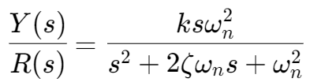
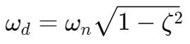
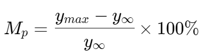

二阶系统,,

- ks: the gain of the system
- ζ: the damping coefficient,,
- ωn: the natural frequency

{damped natural frequency}(实际振荡频率)
| 阻尼比 ζ | 系统行为 | 优点 | 缺点 |
|---|---|---|---|
| ζ = 0 | 持续振荡，无衰减 | 振荡频率明确 | 永不稳定 |
| 0 < ζ < 1 | 衰减振荡 | 快速响应 | 存在超调 |
| ζ = 1 | 无振荡，快速稳定 | 无超调，响应速度快 | 调节时间相对略长 |
| ζ > 1 | 无振荡，缓慢稳定 | 极度稳定 | 响应速度慢，调整时间长 |
ζ = 0（无阻尼，Undamped）
- 系统没有任何阻尼（如完全理想的弹簧-质量系统，没有摩擦）。
- 输出会以自然频率（ωn）持续振荡，没有振幅衰减。
- 系统的响应是纯正弦波振荡。
0 < ζ < 1（欠阻尼，Underdamped）
- 系统有一定阻尼，但不足以完全抑制振荡。
- 输出会以实际振荡频率（）振荡，同时振幅逐渐衰减。
- 存在超调,,：输出会超过目标值，然后逐渐趋于稳定。
ζ = 1（临界阻尼，Critically Damped）
- 系统具有刚好足够的阻尼以避免振荡。
- 输出快速趋近目标值，无振荡，但仍可能有一个较小的超调。
ζ > 1（过阻尼，Overdamped）
- 阻尼过大，系统的响应非常缓慢，输出不会振荡。
- 系统趋于目标值的速度比临界阻尼慢，但更稳定。
阻尼比 ζ
Transient-Response Specifications

- Delay time td: 系统响应达到目标值的 50% 所需的时间。
- Rise time tr: 系统响应从初始值（通常为 10% 的最终值）上升到最终值的 90% 所需的时间。
- Peak time tp: 系统响应首次达到最大值（超调点）所需的时间。
- Maximum (percent) overshoot Mp
- 系统响应超过目标值的最大偏差，相对于目标值的百分比。
- 
- Settling time ts: 系统响应进入并保持在目标值一定范围（通常为 ±2% 或 ±5%）内所需的时间。